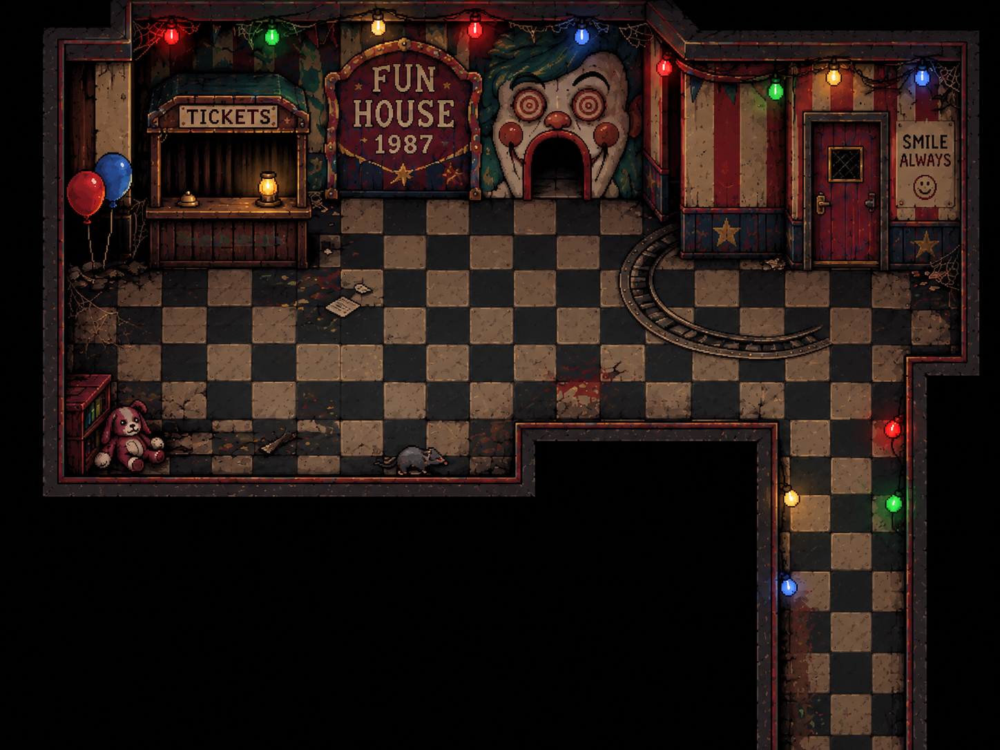
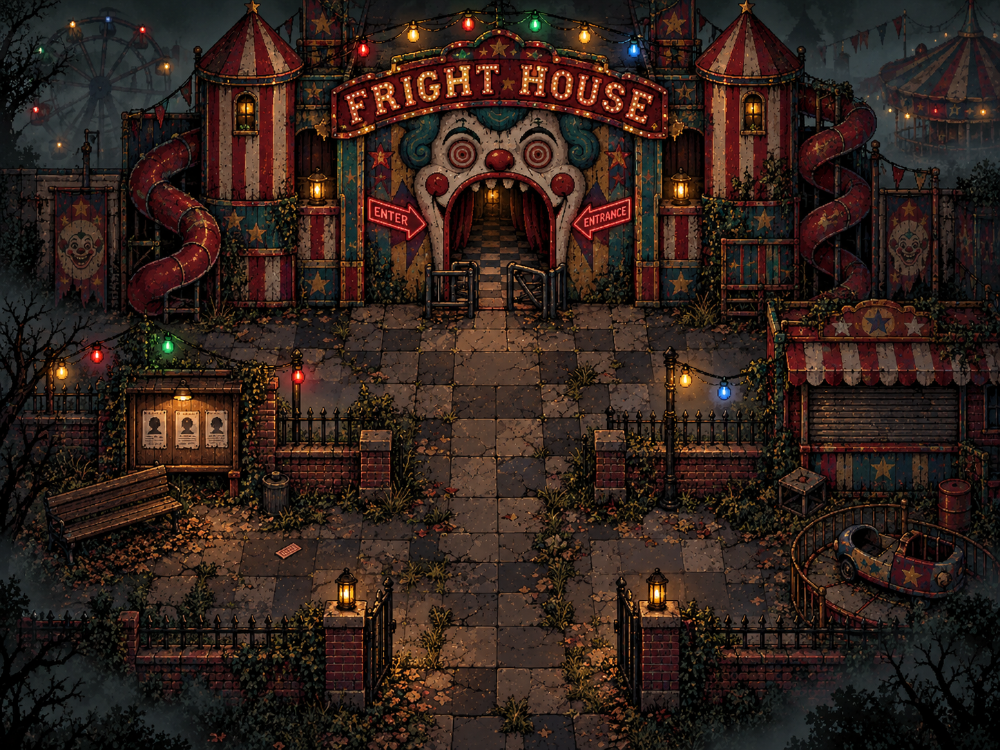

NEXT CONCEPT · REVIEW BEFORE BUILDING
Level 2 — the ticket hall
This reuses the L-shaped room artwork you selected. It is the visual proposal for the campaign’s second area; its final gameplay has not been built.

- Arrive beyond the outdoor turnstile; do not repeat the street’s gate interaction.
- Search the ticket ledger, operate the desk lamp and open the lost-property drawer for a staff note about the children.
- Keep the lower-right corridor as the route onward. The red staff door stays closed until its appropriate story connection is introduced.
- Animate the coloured bulbs and small environmental details. Keep the main rotating-wall puzzles in the lower maze, rather than in this entrance hall.
- Use the approved portrait dialogue format. Character designs remain temporary until your appearance review.
Reply in the conversation to keep this appearance and layout or request changes. No approval is assumed from opening this page.
Level 1 — foggy carnival street
The user approved this image and requested animated lights, a spinning Ferris wheel and a newspaper on the bench.
Play the finished Level 1